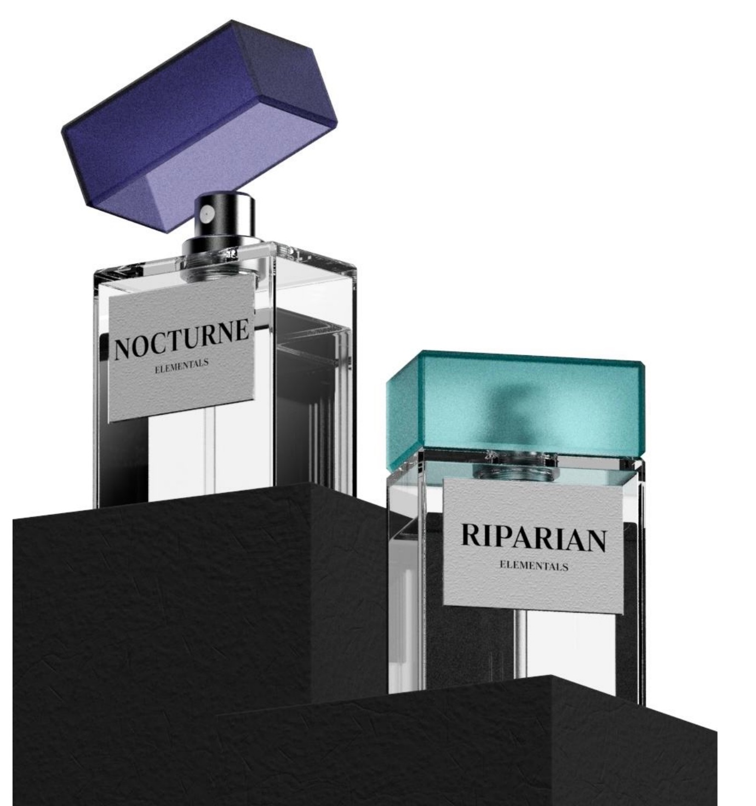

Elementals turns fragrance from something you buy into a memory you discover: each scent is earned through an experience in nature, then kept as a personal archive.
The Problem:
Premium in Price, Generic in Experience
Luxury fragrance shopping has barely changed in decades: walk into a store, smell a few blotter strips, buy a bottle. In a market crowded with similar launches, another bottle doesn't create new emotional value.
Insight:
Luxury Defined by Experience, Not Price
We were new to the European fragrance market, so we started by learning the traditional in-store ritual. The gap we found: nothing ties a scent to the places and moments it is meant to evoke. For younger consumers, a fragrance linked to a real memory is worth more than a higher price tag.
Service Design:
Discover, Unlock, Collect
The whole journey runs on a mobile phone. Its standard sensors (GPS, time, and sound) check when real-world conditions are met.

Each scent opens only under set conditions. Nocturne unlocks after sunset, when ambient sound is under 35 dB.
Once unlocked, the scent can be bought right in the app.
Every unlock is saved with the date and coordinates where it happened.
Rare scents unlock only at unique sites, like Fujisan at Mt. Fuji.
Why It Works:
Built to Last, Open to Everyone, Ready to Grow
Sustainable
Refillable bottles cut packaging waste. One standard glass bottle serves every scent; only the label and color change.
Inclusive
Value comes from experiences open to anyone, not from price alone. Every scent is gender-, race-, and identity-neutral.
Feasible
Unlocking uses standard phone features, with no extra hardware. The scents themselves are developed and produced the usual way.
Scalable
Partnerships with national parks, tourism boards, and conservation groups create location-specific editions. These partnerships encourage travel and exploration.
Measurable
Success is tracked by the Unlock-to-Purchase Conversion Rate: the share of users who buy within a set time after an unlock.
Outcome & Reflection:
Moving Fast in Unfamiliar Territory
[Competition result, if any] In a short time, we learned an unfamiliar market, spotted a meaningful gap, and turned it into a clear, realistic concept. It also pushed us into new ground: how technology and interaction can support a more personal kind of luxury.